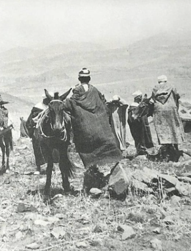

Dhja en de kat

Op een dag kocht Djha een kilo vlees. Hij bracht het naar huis en gaf het aan zijn vrouw om er een lekkere maaltijd van klaar te maken.
Terwijl zij druk bezig was in de keuken, viel Djha in slaap. Op dat moment kwam de zwager van Djha op bezoek. Hij rook de heerlijke geur die uit de pannen opsteeg en het kostte hem geen moeite om zijn zuster over te halen hem wat te geven. Hij liet het zich prima smaken, at alles op, en verdween daarna weer zoals hij gekomen was.
Even later werd Djha wakker. Hij had reuzetrek. Hij ging naar de keuken en liep op de pan af. Maar toen hij het deksel optilde zag hij dat er alleen nog maar saus in de pan zat.
“Waar is het vlees gebleven?” vroeg hij verbaasd aan zijn vrouw. “De kat is de keuken ingekomen en heeft alles opgegeten!” antwoordde ze.
Djha ving de kat, zette hem op een weegschaal en zag dat hij precies een kilo woog. Hij draaide zich om naar zijn vrouw en riep haar toe: “Als datgene wat ik vasthoud de kat is, waar is dan het vlees? En als het het vlees is, waar is dan de kat gebleven?”